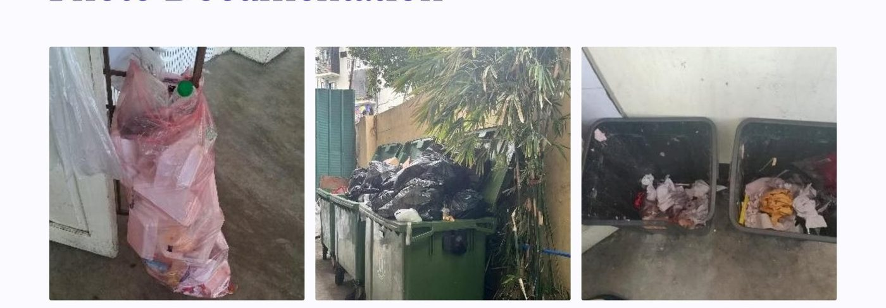

Trash to Treasure
Smart Waste Monitoring and Incentive-Based Solid Waste Management System para sa Ilaya Barangka Integrated School
At a Glance
Research Summary
Conducted at the Senior High School building of Ilaya Barangka Integrated School, this study documented the school’s baseline waste-segregation condition across 61 classrooms and selected high-traffic spaces, then translated the findings into a pilot-ready smart waste-management proposal. The researchers combined classroom mapping, observation logs, and hotspot identification to show that access to bins, visibility of labels, and student reinforcement remain the core operational gaps.
Objectives
- Assess the baseline condition of waste segregation in the IBIS SHS building in terms of bin availability and proper sorting.
- Identify hotspot locations and peak periods with the highest waste volume and sorting errors, including the canteen and third-floor comfort rooms.
- Design a QR-based monitoring workflow using Google Forms and Sheets for hotspot analytics and routine logging.
- Outline an EcoPoints incentive mechanism with validation rules and recognition schedules to encourage student participation.
- Recommend data-driven steps for pilot implementation and possible school-wide adoption.
Context & Method
The study frames school waste management as both an infrastructure problem and a behavior problem. While RA 9003 and the DepEd WinS program require proper segregation and sanitary school environments, everyday routines still generate mixed waste, hidden bins, overflowing containers, and weak compliance after peak disposal periods such as recess. By grounding the proposal in a baseline audit, the study avoids generic solutions and instead points to the locations, times, and system failures that matter most in the IBIS SHS context.
- Research design: baseline descriptive assessment with a pilot-implementation proposal.
- Units of analysis: 61 SHS classrooms plus high-traffic areas (canteen, hallways, comfort rooms).
- Tools: classroom bin-mapping sheet, observation checklist, waste-volume tally sheet, and photo documentation guide.
- Pilot plan: 14–21 day QR-based monitoring with an EcoPoints feedback loop, including deduplication and incomplete-entry cleaning rules.

Key Findings
- Only 31 of 61 classrooms (50.82%) had bins available at the time of the baseline audit.
- Only 9 of 61 classrooms (14.75%) met proper-segregation criteria, indicating very low compliance.
- The canteen and third-floor comfort rooms emerged as the most persistent waste hotspots, especially during recess and immediately after break periods.
- Contamination and overflow stem from uneven infrastructure, weak visual guidance, and limited behavioral reinforcement.
Implications & Recommended Actions
- Standardize bin provision and placement so containers remain visible, accessible, and easy to use.
- Introduce redesigned labels and visual cues before school-wide rollout, especially in pilot areas with the highest error rates.
- Launch QR-based logging in the canteen, hallways, and third-floor comfort rooms to generate real-time hotspot data.
- Implement EcoPoints with transparent rules, weekly recognition, and simple anti-gaming safeguards.
- Use dashboard outputs to coordinate teacher, utility-staff, and student action around recurring problem spots.
“The baseline assessment shows that the waste challenge at IBIS is not only about cleaning up after students; it is about creating a visible, measurable system that makes correct segregation easier to perform and easier to sustain.”